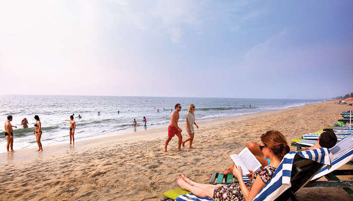
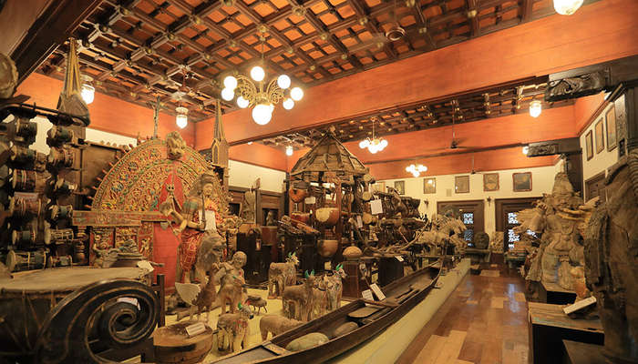

The Commercial Capital of Kerala
Sprawling, residential Ernakulam is known for Marine Drive, a busy waterfront promenade where boats offer backwater cruises. The Kerala Folklore and Hill Palace museums explore local heritage through art and antiquities. Shops along Broadway and on MG Road sell fabrics, crafts, and spices, while modern Lulu Mall also has a cinema and an ice rink. Simple eateries serve Keralan specialties and South Indian seafood.
Top Destinations

The Museum of Mattancherry
It is said that back in the days, this cheri (street), was lined with mutton butchers, and so it ended up being called “Muttoncherry” which over the years evolved into “Mattancherry”. Today the place exhibits centuries-old architectures and various social and cultural imprints left behind by foreigners.

Vypeen Island
Vypeen is one of the popular places to visit in Ernakulam in one day and certainly one of the best islands in Kerala. A short and beautiful ferry ride from the city will take to this serene island which is dotted with beaches, backwaters and an array of restaurants and hotels. A desktop worthy scenery away from the bustling environment is what makes Vypeen island one of the best places to visit in Ernakulam for lovers.

Thattekkad Bird Sanctuary
One of the first bird sanctuaries in Kerala and undeniably a haven for nature enthusiasts. In the words of Salim Ali (world famous ornithologist), Thattekkad is the “richest bird sanctuary in India” since it is home to hundreds of different endangered species of migratory birds. This thick deciduous forest has plantations of mahogany, teak, rosewood and rubber running through it.

Cherai Beach
Located on the north end of Vypin island in Kochi, Cherai beach is a 15 km stretch of wild and rugged beauty. Although not overwhelmed by hotels or major restaurants, the beach is dotted with small shacks selling local snacks like pakoras and chips. Stunning lagoons, wide paddy fields and coconut grooves adorn the road to the beach. Ernakulam sightseeing is not complete without a visit to Cherai beach.

Hill Palace
Hill Palace is a prominent Heritage museum, which exhibits countless archaeological relics and belongings of the Maharaja of Kochi. This famous palace, which was built in 1865, comprises forty-nine buildings with enchanting gardens and a children’s park. It is opened to the public from 9 AM to 12 noon and from 2 PM to 4: 30 PM. Of all the majestic Ernakulam tourist places, Hill Palace is certainly one of the top attractions.
David Hall Art Gallery
A Dutch bungalow near the Dutch cemetery in Fort Kochi got renovated to become a major attraction for art lovers. One of the best places to visit in Ernakulam, the gallery exhibits works by prominent and local artists. Travellers will also be delighted to find a cosy garden restaurant which serves a variety of cakes and snacks; however the café is known for its fresh and crispy pizzas.

Folklore Museum
Folklore Museum is one of the popular tourist spots in the city. It is a three storied complex that showcases cultural exhibits and tribal artefacts. The Museum design was greatly inspired by the Malabar architecture. The museum is opened to the public from 9: 30 Am to 7 PM on a regular basis.
Princess Street
Vasco Da Gama is believed to have lived in the building at the end of this street. The road is now lined with eateries, bookstores, cafes and small hotels. Similar to MG road, Princess Street too is a shopper’s delight. Hands down, this vibrant attraction is one of the best places to visit in Ernakulam.

Santa Cruz Basilica
It is deemed as one of the oldest cathedrals across the nation and is one of the finest architectural marvels in India. The spectacular historical painting inscribed on the walls of the building is the unique feature of this cathedral.

Fort Cochi
A charming seaside area, Fort Kochi is known for its Dutch, Portuguese, and British colonial architecture, and elaborate bamboo fishing nets at Fort Kochi Beach. St. Francis Church was the original burial site of explorer Vasco da Gama.